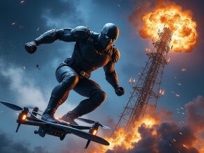

SuperHero
Code Name: Ratel
Filename: Rémi Lachance
Specialty: Hodling Bitcoin, Snow Boarding and InfoSec
Birthplace: Mont-Tremblant
Ratel takes on the injustices of the world head on without fear of punching up. He is a brilliant computer wiz and a an experienced snowboarder. He studied cryptography, networking and computer security, which provided the foundational knowledge to understand and appreciate the value of bitcoin in its early days.

As his knowledge of the system grew, so did his concerns over the corruption in the world, prompting him to take decisive action. In a attempt to investigate the bank, he made serious mistakes that led to his arrest and eventual incarceration. Fortunately he had secured his Bitcoin in the form of seed words and therefore carried his fortune around in his brain wallet.
"He's the quiet type, the type that'll take in everything thing he sees and plan your downfall if you cross him." -fellow inmate